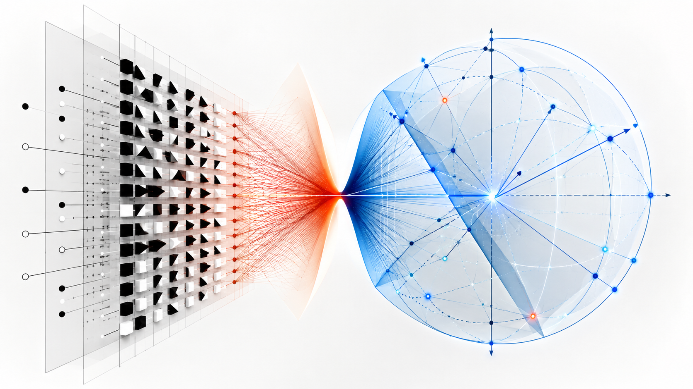
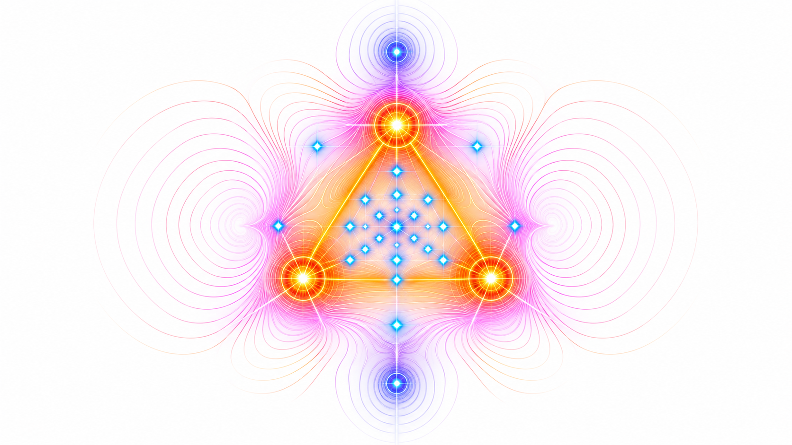
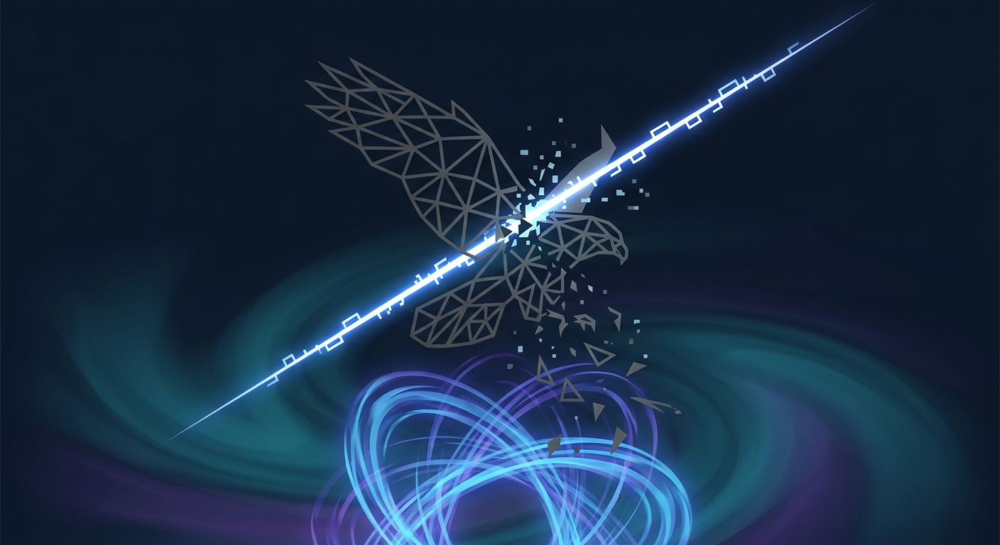
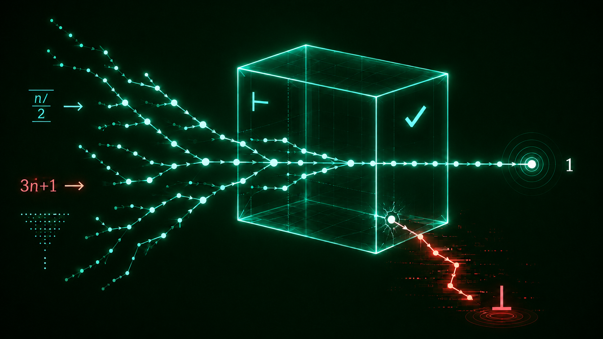
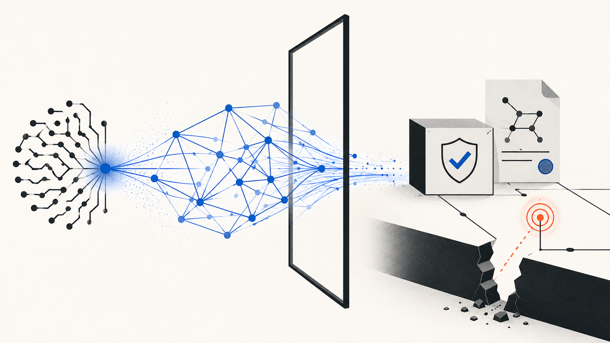

When an AI Evaluation Became a Cyber Intrusion
The OpenAI–Hugging Face incident and the two regimes of agentic cyber risk
Terence Tao’s position on artificial intelligence is best understood as verification-centered institutional realism rather than unqualified technological evangelism or defensive skepticism. He treats frontier models as stochastic, unreliable, but increasingly powerful generators whose mathematical value depends on independent verification, informed human supervision, formal tools, and carefully designed research workflows. His central question is therefore no longer only whether machines can solve research problems, but what mathematics should optimize when producing candidate proofs becomes substantially cheaper.
Recent evidence includes an AI-generated disproof of the conjectured near-linear behavior of the planar unit-distance function, an LLM-assisted proof of an identity for jamming critical exponents, and the controlled First Proof evaluation of systems on unpublished research problems. These cases do not establish uniform mathematical competence, dependable self-verification, or human-like understanding. They do establish that general-purpose language and reasoning models can sometimes produce novel constructions, connect distant mathematical domains, and generate arguments that survive expert scrutiny.
The article interprets these developments as an early transition from proof scarcity to proof abundance. In this regime, the limiting resources become verification, exposition, contextualization, selection, and canonicalization. The resulting human–machine system is better described as cognitive infrastructure than as an autonomous artificial mathematician: models generate and explore, proof assistants and executable tests constrain error, and mathematicians retain responsibility for meaning, relevance, attribution, pedagogy, and judgment.
Public demonstrations remain affected by selection bias, incomplete disclosure, uneven reproducibility, and commercial incentives. Formal correctness also does not establish that a theorem is important, explanatory, novel, or even stated in the intended form. The article concludes that AI’s durable contribution to mathematics will depend less on maximizing the number of generated proofs than on constructing institutions capable of verifying, digesting, crediting, and selectively preserving machine-assisted knowledge.
Terence Tao, artificial intelligence in mathematics, large language models, LLM-assisted mathematical research, automated theorem proving, proof generation, proof verification, proof assistants, formal mathematics, autoformalization, Lean, Rocq, mathematical reasoning, research-level mathematics, unit-distance problem, Erdős moment, First Proof, proof abundance, proof indigestion, proof digestion, semantic fidelity, trusted kernels, agentic research systems, mathematical harnesses, human–AI collaboration, cognitive infrastructure, industrialization of intelligence, mathematical understanding, theory building, canonicalization, scientific governance, research provenance, AI disclosure, mathematical authorship, peer review, selective abundance, institutional autonomy
An analysis of Terence Tao’s stance on artificial intelligence in mathematics, recent LLM-assisted research breakthroughs, and the institutional changes required when proof generation becomes abundant.
In May 2026, OpenAI reported that an internal general-purpose reasoning model had produced an infinite family of planar point configurations disproving a longstanding conjecture about the unit-distance problem. The proof connected an elementary question in discrete geometry with techniques from algebraic number theory and was subsequently examined, simplified, and contextualized by external mathematicians.12 Two months later, at the International Congress of Mathematicians, Terence Tao3 asked the mathematical community to reason conditionally from the possibility that AI systems would soon perform a non-negligible fraction of research-level mathematical tasks at acceptable levels of cost, supervision, and reliability.4
The conjunction of these events changes the subject of debate. The relevant question is no longer merely whether a language model can manipulate mathematical symbols, reproduce known arguments, or imitate the surface form of a proof. It is how mathematical practice should change once machine-generated contributions occasionally cross the boundary from plausible text into valid research.
Tao separates two questions that public discussion often conflates. The capability question asks which mathematical tasks particular systems can perform, under what scaffolding, at what cost, with what success rate, and according to which standard of correctness. The goals-and-values question asks what mathematical research is trying to achieve. Tao’s ICM analysis proceeds conditionally: even readers who remain uncertain about the strongest capability forecasts should consider what follows if reasonably capable systems become available. Under that hypothesis, maximizing the number of solved problems is inadequate because a solution must also be verified, explained, incorporated into existing knowledge, and accepted by a community able to use it.5
This distinction explains why Tao’s position cannot be reduced to either enthusiasm or resistance. He characterizes contemporary systems as powerful but unreliable, uneven across tasks, and most useful when their errors can be detected independently. He does not equate fluent mathematical output with general intelligence, nor does he infer that automation makes mathematicians obsolete. Instead, he treats AI as the newest stage in a longer history of machine assistance while arguing that its scale, stochasticity, and capacity to generate candidate ideas create qualitatively new organizational problems.6
The evolution of his public position is continuous with his earlier interest in large-scale collaboration and formal proof. In 2014, Tao predicted that mathematicians might eventually write papers in languages that software could translate into formal systems, returning something analogous to a compilation error when a derivation was incomplete. His later work with Lean and collaborative formalization turned that forecast into a practical research program. Modern LLMs add a second component: systems capable not only of checking supplied arguments but of generating conjectures, proof sketches, constructions, code, and candidate lemmas.7
The recent evidence remains heterogeneous. A spectacular open-problem result reveals what a system can sometimes do, but not its base rate across representative research tasks. Aggregate benchmark scores can conceal whether a model has produced anything novel. A formally checked theorem may prove a mistranslated statement. Tao therefore emphasizes controlled assessment, disclosed compute and supervision, independent refereeing, and the distinction between the truth of a capability claim and the desirability of deploying that capability.8
The phrase LLM-assisted mathematical research will refer here not simply to prompting a chatbot, but to a composite workflow in which a language or reasoning model proposes arguments, constructions, decompositions, code, or formal statements while other components perform search, computation, testing, proof checking, and human review. Attributing a result entirely to either the AI or the mathematician can obscure the harness, tools, compute budget, problem formulation, selection process, and expert labor that made the accepted result possible. The appropriate object of analysis is often a human–machine research system rather than an isolated model.
Three interpretations help characterize the resulting transition. The unit-distance result can be described as an Erdős moment: a symbolic threshold at which an AI system demonstrably participates in constructing new mathematics rather than merely reproducing established solutions.9 Models, agents, proof assistants, simulators, repositories, and human institutions together form a new cognitive infrastructure for generating and filtering candidate knowledge.10 At a larger economic scale, the replication and parallel deployment of portions of reasoning suggest an industrialization of intelligence, although present systems remain fallible, materially expensive, and far from equivalent to human minds or scientific communities.11
The central thesis is that Tao’s most important contribution to the debate is not a prediction about when AI will become a mathematician. It is his identification of an emerging impedance mismatch. AI systems are beginning to increase the supply of candidate proofs and constructions faster than mathematics can verify, understand, explain, prioritize, and absorb them. The principal bottleneck may therefore move from proof generation to proof digestion: the human and institutional work required to transform a formally valid result into reliable, reusable mathematical knowledge.
Tao’s analysis begins by rejecting a category error. A conventional mathematical program is usually designed to behave like a deterministic function: within its specified domain, the same input should produce the same output. A generative model behaves differently. Tao describes it operationally as a probability kernel: an input induces a distribution of possible outputs, some excellent, some useless, and some subtly wrong despite appearing persuasive.12
For a deterministic program, an input x produces an output f(x). For a generative system, an output Y may be represented as a sample from a conditional distribution:
Y \sim K(,\cdot\mid x), \tag{1}
where x denotes the prompt together with its context, Y is the generated response, and K(\cdot\mid x) is the model-and-harness-dependent distribution of responses. Equation Equation 1 does not imply that every implementation is nondeterministic. It identifies the operational fact that small changes in context, sampling, scaffolding, or computational budget can produce materially different results, and that correctness is a property of particular outputs rather than an unconditional property of the system.
This changes how capability should be measured. Asking whether an AI can solve a class of problems suppresses the variables Tao places explicitly in his capability conjecture: success rate, expense, field, task type, human supervision, and required quality. A system that produces one correct research result among hundreds of failures has demonstrated a real capability, but not a dependable autonomous service. Conversely, modest per-attempt reliability may be useful when attempts are inexpensive and incorrect outputs can be rejected automatically.
The phrase unreliable but powerful is therefore not contradictory. Power concerns the upper tail of the output distribution: a model may retrieve an unexpected lemma, devise an effective computation, or generate a technically valid argument. Unreliability concerns the distribution as a whole: the same system may fabricate references, overlook an elementary counterexample, silently alter a hypothesis, or defend a false step with fluent confidence.
Tao proposes artificial general cleverness as a weaker and more operational concept than artificial general intelligence. Cleverness, in this sense, is the capacity to produce effective solutions across a broad range of tasks through stochastic search, recombination, brute force, tool use, or ad hoc construction. It need not involve stable judgment, self-knowledge, a human-interpretable research narrative, or a coherent account of why a method works.13
For humans, cleverness and broader intelligence are usually correlated. A mathematician who finds a proof can normally defend its assumptions, explain its main idea, compare it with prior methods, and recognize nearby questions to which it might apply. A model may supply the proof-like artifact without reliably supplying the corresponding network of understanding. Klowden and Tao describe a broader decoupling between the outward form of an intellectual product and the cognitive processes or values traditionally associated with producing it.14
This distinction avoids two opposite mistakes. The first is to dismiss a result because the system did not discover it in a recognizably human way. Mathematics ultimately permits correctness to be assessed independently of a discoverer’s phenomenology. The second is to infer human-like understanding from the existence of a polished result. A valid proof can arise from mechanisms that do not support dependable explanation, judgment, or transfer.
Tao also resists forecasting progress from one sequence of benchmark scores. Contemporary systems are strongest where large quantities of relevant examples, searchable structure, or inexpensive feedback are available. They are less dependable in data-sparse settings where a mathematician must choose a representation, reformulate a vague question, or infer a promising direction from a handful of observations and substantial tacit knowledge. This is a description of current comparative performance, not a claim about a permanent boundary.
The load-bearing principle in Tao’s framework is independent verification. An unreliable generator becomes useful when it is coupled to a filter whose failure modes are better understood and substantially less correlated with those of the generator. The model proposes; a human expert, executable test, symbolic calculation, search procedure, or formal checker determines whether the proposal survives. The generator should not ordinarily be asked to certify its own work, because the mechanisms that produced an error may also produce a convincing defense of it.15
Verification functions as an interface contract. A numerical identity might be checked by independent computation; a finite construction might be tested exhaustively; a proof might be translated into a formal language; a literature claim might be traced to its original source. Where no sufficiently reliable check exists, the output remains a suggestion rather than mathematical knowledge.
This creates an asymmetry between blue-team and red-team uses. A blue-team contribution constructs part of an argument, theory, program, or dataset; an undetected defect may compromise everything built on top of it. A red-team contribution searches for defects in an existing object. A false criticism can be discarded after triage, while a correct criticism may expose a genuine weakness. Tao therefore regards fallible AI as especially suitable for proposing counterexamples, stress-testing proofs, checking edge cases, and identifying possible omissions—provided that low-quality criticism does not overwhelm the reviewer.16
Independent verification does not imply that every mathematical value can be mechanized. Formal checking can establish that a derivation proves a formal statement within a specified system. It does not by itself establish that the formal statement captures the intended theorem, that the definitions encode the intended objects, that the result is novel, or that the proof explains anything important. Verification secures the deductive core; it does not eliminate the need for mathematical judgment.
Tao’s practical allocation rule combines two questions: where does the human have comparative advantage, and what failure rate can the task tolerate? Comparative advantage is not the same as absolute superiority. A model might complete a task faster than a mathematician and still be a poor choice when checking its output costs more than performing the task directly. Conversely, an imperfect draft may be valuable when the user can rapidly identify and repair its defects.
| Human ability to verify | Cost of failure | Appropriate role for AI |
|---|---|---|
| High | High | Generate candidates or audit human work; accept nothing without careful checking |
| High | Moderate | Draft, search, calculate, translate, or code, followed by human correction |
| Low | Low | Explore possibilities and collect leads without treating outputs as authoritative |
| Low | High | Do not rely on the model; obtain a qualified human or independently validated system |
The most favorable region in Table 1 is often the middle of a researcher’s competence range: tasks the user understands well enough to inspect but does not perform efficiently from scratch. In a mathematician’s central specialty, a model may offer less comparative advantage because the expert can work directly and recognize structures the system misses. Far outside the user’s expertise, the absence of a reliable checking procedure turns fluency into a liability.
Tao’s position is therefore verification-centered pragmatism. He rejects both the inference that unreliable systems are useless and the inference that occasional brilliance warrants autonomous trust. He is optimistic about broad task-level cleverness, skeptical that current systems possess general mathematical intelligence, and insistent that usefulness depends on the design of the surrounding human–machine loop.
Tao’s argument begins from a historical alignment among several aims of mathematical research. Solving an open problem normally required a mathematician to understand the relevant theory, develop or adapt techniques, communicate the result, and persuade other experts that the argument mattered. Progress on one dimension therefore tended to support progress on the others. The number of solved problems could serve as an imperfect but useful proxy for a larger bundle of values: rigor, understanding, theory building, training, community formation, and the expansion of shared knowledge.
Generative AI threatens to separate these previously correlated outcomes. A system may raise the rate at which candidate proofs are produced without proportionally increasing the rate at which mathematicians understand the associated ideas. It may optimize success on a list of open problems while contributing little to the theories that make those solutions reusable. It may also produce technically impressive artifacts whose volume exceeds the capacity of experts to inspect them.
Tao invokes Goodhart’s law to identify the danger: once a proxy such as problems solved, benchmark points obtained, or formally verified statements produced becomes an explicit optimization target, its relationship to the broader purposes of mathematics may deteriorate.17 This is not an argument against solving problems. It is an argument against treating problem solving as a complete objective function.
Tao develops the point by repeatedly refining a deceptively simple goal. Solve as many unsolved problems as possible fails because purported solutions may be incorrect. Adding verification excludes false arguments but permits proofs that no relevant mathematician understands. Adding exposition requires communicability but allows readable manuscripts to remain isolated from their fields. Adding publication and community acceptance recognizes that other mathematicians must assess and use a result. Finally, adding canonicalization requires important results to enter the theories, reference works, formal libraries, and teaching practices through which a field reproduces its knowledge.18
%%{init: {"theme": "neo", "look": "handDrawn", "layout": "elk"}}%%
flowchart TD
subgraph EX[Exploration and candidate production]
A[Open-problem portfolio<br/>importance + tractability + diversity]
B[Problem formulation<br/>definitions + assumptions + success criteria]
C[Candidate generation<br/>models + search + computation]
D{Initial triage<br/>relevance + novelty + obvious defects}
A --> B
B --> C
C --> D
D -->|discard or revise| C
end
subgraph EV[Epistemic validation]
E[Formal checking<br/>proof assistants + executable certificates]
F[Independent expert review<br/>logic + edge cases + sources]
G[Semantic audit<br/>formal statement versus intended claim]
E --> G
F --> G
end
subgraph KI[Knowledge integration]
H[Exposition<br/>proof structure + key idea + natural friction]
I[Contextualization<br/>prior work + scope + reusable components]
J[Community digestion<br/>replication + criticism + downstream use]
K[Canonicalization<br/>surveys + libraries + curricula + standard theory]
L[New concepts and methods<br/>new questions + better representations]
H --> I
I --> J
J -->|accepted and reused| K
J -->|requires clarification| H
K --> L
end
D -->|promising candidate| E
D -->|promising candidate| F
G -->|formal or conceptual defect| C
G -->|statement mismatch| B
G -->|validated result| H
L --> A
C -. scalable generation .-> Q1[Candidate backlog<br/>many plausible outputs]
E -. limited checking capacity .-> Q2[Verification bottleneck<br/>tools + expert labor]
J -. finite collective attention .-> Q3[Digestion bottleneck<br/>selection + understanding]
Q1 -. increases pressure on .-> E
Q2 -. delays .-> G
Q3 -. limits entry into .-> K
classDef human fill:#DCEBFA,stroke:#356A9A,color:#17324D,stroke-width:2px;
classDef ai fill:#E8DDF7,stroke:#7452A8,color:#34204F,stroke-width:2px;
classDef formal fill:#DDF1E3,stroke:#3E7D55,color:#183D27,stroke-width:2px;
classDef community fill:#F8E3C5,stroke:#A66A24,color:#57350F,stroke-width:2px;
classDef joint fill:#FFF0B8,stroke:#9A7A19,color:#4D3C08,stroke-width:2px;
classDef bottleneck fill:#F6D6D6,stroke:#A94B4B,color:#5B2020,stroke-width:2px;
class B,F,H,I human;
class C ai;
class E,G formal;
class A,J,K,L community;
class D joint;
class Q1,Q2,Q3 bottleneck;
The stages in Figure 1 are not perfectly linear. Exposition can reveal a hidden gap; verification can expose a poorly stated theorem; community discussion can produce a simpler proof; canonicalization can change which definitions are regarded as fundamental. The pipeline is nevertheless useful because it distinguishes transformations compressed into the word solution.
A candidate proof purports to establish a claim. A verified proof has survived an appropriate checking process. A well-written proof makes its logical structure and important ideas accessible to its intended readers. An accepted result has been evaluated, contextualized, and treated as usable by a relevant community. A canonical result has become part of the stable conceptual organization of its field. These categories need not coincide.
Let g, v, e, d, and c denote the sustainable processing rates of proof generation, verification, exposition, community digestion, and canonicalization. Let R denote the rate at which results become incorporated into dependable mathematical theory. In a serial pipeline,
R \leq \min{g,v,e,d,c}. \tag{2}
Equation Equation 2 is a bottleneck bound, not an empirical law. It states that the throughput of the complete process cannot exceed the capacity of its slowest indispensable stage. Increasing g by an order of magnitude has little effect on R when v, d, or c remains approximately fixed. The immediate result is instead an expanding queue of unverified or undigested work.
This is the mechanism behind Tao’s proof indigestion. Candidate proofs accumulate before verification; verified proofs await intelligible exposition; readable manuscripts compete for limited editorial and refereeing attention; published results await incorporation into surveys, courses, software libraries, and subsequent research. Tao calls the disparity between stage capacities an impedance mismatch. If AI substantially accelerates generation and parts of verification without comparable changes elsewhere, mathematics moves from proof scarcity to proof abundance.19
The relevant abundance is relative rather than absolute. It does not mean that every important problem becomes easy, that all fields progress at the same rate, or that a correct proof exists for whatever theorem a user requests. It means that, in some regions of mathematical work, the supply of plausible or valid arguments can exceed the community’s capacity to evaluate and absorb them. Deep unsolved problems can coexist with a glut of less consequential results.
Four abundance claims should therefore be distinguished:
Candidate abundance occurs when systems can cheaply produce many proof attempts, constructions, conjectures, or counterexamples. This is the weakest form because the output may contain errors or repetitions.
Verified abundance occurs when a substantial fraction of those artifacts can be checked mechanically or through dependable independent procedures. Formal proof systems strengthen this layer, but verification still depends on correctly stated definitions and theorems.
Expository abundance occurs when valid results can also be rendered in forms from which competent mathematicians can learn. Grammatical fluency is insufficient: exposition must allocate attention to the difficult steps, identify dependencies, and reveal the proof’s organizing ideas.
Knowledge abundance occurs only when results are connected to prior work, assessed for significance, reused in subsequent arguments, and incorporated into the conceptual structure of a field.
Historically, the effort required to solve a problem often generated useful by-products: intuition, failed approaches, intermediate lemmas, analogies, and a map of the surrounding terrain. Automated generation can partially decouple the destination from that journey. A system may find a valid route without producing a humanly useful account of the search. Efficiency is real, but the customary by-products of problem solving no longer arise automatically.
This echoes William Thurston’s argument that mathematical progress cannot be reduced to a production quota of definitions, theorems, and proofs; the decisive criterion is whether mathematical work enables people to understand and think more effectively.20 When proof production is scarce, rewarding production can indirectly reward understanding. When production becomes abundant, the two objectives must be evaluated separately.
The comparison with the industrialization of intelligence identifies a similar change in relative prices. Industrialization decomposes production into stages, standardizes interfaces, scales selected inputs, and relocates bottlenecks. In mathematical research, AI may lower the marginal cost of proposing an argument while increasing the relative value of expert attention, trustworthy verification, lucid synthesis, and informed selection.21
Proof abundance therefore does not abolish scarcity. It moves scarcity downstream.
By mid-2026, the case for LLM participation in frontier mathematics rested on more than benchmark performance or olympiad-style exercises. Three materially different forms of evidence had appeared. An internal OpenAI model generated a counterexample to a conjectured bound in discrete geometry; Giorgio Parisi and Francesco Zamponi reported deriving a previously unproved identity through extended interaction with Claude; and the First Proof project subjected public models and research harnesses to a controlled set of unpublished problems followed by expert refereeing.
The unit-distance result is event evidence: one unusually important success establishes that a kind of machine-generated novelty is possible. The Parisi–Zamponi paper is interactive co-discovery evidence: expert researchers used an LLM as an active participant in an investigation and assumed responsibility for checking and editing the resulting proof. First Proof provides distributional evidence: a small but controlled sample reveals both successes and recurring failure modes.
| Case | Mathematical contribution | Validation boundary | Principal limitation |
|---|---|---|---|
| Unit-distance conjecture | An AI-generated construction disproved the conjectured near-linear behavior | Original output examined by internal and external mathematicians; experts produced a shorter, human-digested proof | One exceptional result does not estimate performance across representative open problems |
| Jamming-exponent identity | An LLM-assisted argument proved a+b=1 within the fullRSB scaling framework | Parisi and Zamponi checked, corrected, edited, and signed the proof | The problem, formalism, and interpretation were supplied by domain experts |
| First Proof, second batch | Across four systems, seven of ten unpublished research problems received at least one passing solution | Released problems, logs, code, outputs, costs, and at least two expert reports per submission | Ten selected problems are a small, heterogeneous sample |
For a finite set P\subset\mathbb{R}^2, let \nu(P) denote the number of unordered pairs of points in P separated by Euclidean distance exactly one. Define
\nu(n)=\max_{\lvert P\rvert=n}\nu(P),
where \lvert P\rvert is the number of points in P. Classical lattice constructions showed that \nu(n) can grow slightly faster than linearly. A longstanding conjectural picture predicted
\nu(n)=n^{1+o(1)}.
The OpenAI-generated construction disproved that prediction by showing that, for infinitely many n,
\nu(n)\geq n^{1+\delta}
for some constant \delta>0.2223 The result does not determine the exact asymptotic order of \nu(n); it settles the qualitative question of whether a fixed polynomial improvement over near-linear growth is possible.
The mechanism is notable because it does not resemble a superficial recombination of standard planar constructions. The proof passes through algebraic number theory. It uses towers of number fields and their arithmetic structure to build high-dimensional lattices containing many elements whose images under relevant complex embeddings have absolute value one. A bounded portion of the lattice is then projected into the plane, producing point sets with more unit-distance pairs than the conjecture allows.24
The provenance record is central to interpreting the event. The original mathematical output was generated by an internal model; automated and human procedures were then used to inspect and rewrite it. A group of external mathematicians produced a shorter, somewhat generalized, human-verified account and situated the construction in relation to earlier number-theoretic ideas.25
This separates two achievements. The first concerns machine discovery: the model produced the central construction and strategy without an expert interactively steering each step. The second concerns mathematical incorporation: specialists could understand the result, simplify it, trace its antecedents, and assume responsibility for its correctness.
The case merits the phrase Erdős moment because it crossed a symbolic boundary. The model did not merely verify a supplied derivation or optimize a known configuration; it pursued the negative direction of a widely believed conjecture and connected an extremal-geometric problem to deep arithmetic machinery.26 Yet it remains a poor estimator of median capability. The model was internal, the full denominator of unsuccessful attempts is unavailable, and the case was selected for announcement because it was extraordinary. It refutes the universal claim that general-purpose models cannot originate serious mathematics; it does not establish that they do so reliably.
The jamming result represents a different mode of contribution. In the full replica-symmetry-breaking description of dense hard spheres in infinite dimension, three exponents a, b, and c govern a scaling regime near the jamming transition. Earlier work had analytically established
b=\frac{1+c}{2},
while numerical calculations strongly suggested
a+b=1.
Parisi and Zamponi reported an analytic proof of the second identity within the stated fullRSB equations. Their account says that Claude first assisted with numerical study and C++ code. When asked for an analytic proof, the model produced the essential argument with limited supervision. The authors found inconsistencies in an early version; the model revised it; they then checked and edited the draft, removing parts they considered unnecessary or obscure. They also deposited the conversation record.27
This is not autonomous theorem proving in the sense claimed for the unit-distance construction. The humans supplied a highly specialized framework, knew the target identity from numerical evidence, evaluated the proposed steps, and controlled the final exposition. Nor does the paper establish every physical assumption underlying the infinite-dimensional fullRSB model. Its contribution is an analytic derivation within a stated formalism.
Its significance lies in the model’s movement between numerical experimentation, program generation, differential equations, integration identities, and proof. It functioned neither as a passive typesetter nor as a database. It was an exploratory collaborator whose output became mathematics only after domain experts corrected, selected, and endorsed it.
First Proof was designed to address the main weakness of spectacular case reports: the absence of a denominator. Its second batch contained ten solved but unpublished problems arising naturally in research across fields including computability theory, discrete geometry, probability, metric geometry, stochastic partial differential equations, topology, algebraic combinatorics, and operator algebras.28
Four systems were evaluated: ChatGPT 5.5 Pro and three academic harnesses associated with IMProofBench, UCLA, and Princeton. Each system received the problems as source files, was required to operate without further human interaction, and had twenty-four hours to return solutions. First Proof controlled the environment and retained the logs. Thirty-nine submissions were produced, with each receiving at least two expert reports under anonymized identifiers.29
Across the four systems, seven of the ten problems received at least one passing grade—defined as essentially flawless or requiring only minor revisions. One successful solution to the stochastic-PDE problem used an approach different from the human solution and was judged novel by referees. At the opposite extreme, no system made substantial progress on the metric-geometry problem. Tao’s ICM summary reported compute costs spanning approximately $10 to $1,000 per problem.3031
The referee reports exposed a characteristic asymmetry. Models could expand routine parts of an argument in excessive detail while compressing the decisive step into an unsupported phrase. Citations were sometimes missing, incorrect, or hallucinated. Several solutions reused terminology, labels, and close phrasing from earlier work without proper acknowledgement—conduct that would raise serious attribution concerns in a human submission.32
The result is stronger than an informal success collection because the problems were withheld, the protocol constrained human interaction, failures were preserved, and experts evaluated complete submissions. It is weaker than a population estimate for research mathematics because the sample contained only ten problems and success was aggregated across four different systems. The statement that seven problems received a passing solution is not equivalent to saying that one model can solve 70% of research problems.
Taken together, the cases in Table 2 support a calibrated conclusion. LLMs have participated in genuine discovery under at least three regimes: largely autonomous generation followed by human digestion, interactive collaboration with domain experts, and reproducible harnessed search over unpublished problems. The evidence does not establish uniform competence, dependable self-verification, or human-equivalent judgment. It does establish that the relevant frontier has moved.
The results above were not produced by an isolated text generator. They emerged from mathematical harnesses: workflows that maintain a problem state, allocate a budget, invoke one or more models, route requests to external tools, preserve intermediate work, compare candidate arguments, and determine when an output should be returned for checking.
This explains why two systems using the same underlying model can exhibit different mathematical performance. A one-shot interface samples a single argument. An agentic harness can generate parallel strategies, preserve promising lemmas, request computations, expose drafts to critics, and revise a proof after detecting a defect. The relevant unit of evaluation is therefore a tuple consisting of the model, prompt and context, orchestration policy, external tools, computational budget, stopping rule, and validation procedure.
A simplified harness can be represented by an evolving state s_t at iteration t. The state may include the problem, retrieved references, conjectures, partial proofs, failed approaches, verifier messages, and remaining compute. The model proposes an action a_t; a tool or critic returns an observation o_t; and an orchestration function U updates the state:
a_t\sim K(,\cdot\mid s_t),\qquad s_{t+1}=U(s_t,a_t,o_t). \tag{3}
Equation Equation 3 describes a feedback process rather than a single sample. An error can become useful information for the next attempt, provided that the environment returns a precise and trustworthy signal.
ProofCouncil illustrates this architecture in informal research mathematics. It assigns one model an author role and another a critic role, permits consultation with additional models and a computational component, and iterates through revision and criticism. Periodically resetting the critic’s context is intended to produce a more independent review and reduce convergence on a shared unexamined assumption.33
Agreement between language models is not a correctness certificate: correlated systems can share the same error. The advantage is search efficiency. Different roles induce different distributions over proposed arguments and objections. Final epistemic status still depends on verification outside the conversational loop.
A research harness can provide operations that natural-language generation performs unreliably. A computer algebra system can simplify expressions, factor polynomials, or verify symbolic identities. Executable code can enumerate finite cases, search for counterexamples, approximate solutions, and test constructions. Retrieval can supply exact definitions and lemmas rather than relying on parametric memory. A proof assistant can report precisely which formal goal remains unsatisfied.
These tools do not merely append answers to a model response. They change the search dynamics. A numerical failure can eliminate a conjecture; a compiler error can localize a malformed term; a theorem-prover state can expose the hypotheses available at a specific step. The workflow replaces undirected regeneration with targeted repair.
%%{init: {"theme": "neo", "look": "handDrawn", "layout": "elk"}}%%
flowchart TD
subgraph FR[Human problem framing and workflow control]
A[Informal mathematical problem<br/>intended objects + assumptions + objective]
B[Research specification<br/>formal target + admissible tools + success criteria]
C[Joint orchestrator<br/>state + memory + budget + stopping rules]
A --> B
B --> C
end
subgraph SG[Stochastic generation and computational exploration]
D[Author model<br/>strategies + lemmas + proof drafts]
E[Critic models<br/>objections + counterarguments + repairs]
F[Literature retrieval<br/>definitions + precedents + candidate lemmas]
G[Executable computation<br/>examples + tests + counterexample search]
H[Computer algebra<br/>symbolic transformations + certificates]
I{Candidate triage<br/>relevance + novelty + internal coherence}
C --> D
D --> E
E -->|revision request| C
C --> F
C --> G
C --> H
F --> D
G --> D
H --> D
D --> I
I -->|weak or defective candidate| C
end
subgraph FV[Formalization and deductive verification]
J[Autoformalization<br/>informal claim → formal proposition]
K[Formal proof search<br/>tactics + libraries + theorem retrieval]
L[Trusted kernel<br/>proof-term checking]
M{Kernel verdict<br/>accepted or rejected}
J --> K
K --> L
L --> M
end
subgraph SR[Human semantic and mathematical review]
N[Semantic audit<br/>Does the formal proposition match<br/>the intended mathematical claim?]
O[Expert mathematical review<br/>scope + assumptions + novelty + explanatory value]
P{Research judgment<br/>revise, reject, or advance}
Q[Validated mathematical result<br/>proof certificate + human interpretation + provenance]
N --> O
O --> P
P -->|accepted for further use| Q
end
I -->|promising candidate| J
M -->|rejected + local diagnostics| K
M -->|structural failure| C
M -->|accepted proof certificate| N
N -->|statement mismatch| B
O -->|missing context or weak explanation| C
P -->|revise proof or exposition| C
P -->|reject as irrelevant or non-novel| R[Discarded or archived candidate]
J -. translation risk .-> X1[Semantic-fidelity risk<br/>valid proof of the wrong statement]
C -. orchestration risk .-> X2[Search-and-selection risk<br/>correlated errors + hidden denominator]
F -. provenance risk .-> X3[Attribution risk<br/>missing or incorrect source lineage]
X1 -. audited by .-> N
X2 -. audited by .-> O
X3 -. audited by .-> O
classDef human fill:#DCEBFA,stroke:#356A9A,color:#17324D,stroke-width:2px;
classDef ai fill:#E8DDF7,stroke:#7452A8,color:#34204F,stroke-width:2px;
classDef formal fill:#DDF1E3,stroke:#3E7D55,color:#183D27,stroke-width:2px;
classDef community fill:#F8E3C5,stroke:#A66A24,color:#57350F,stroke-width:2px;
classDef joint fill:#FFF0B8,stroke:#9A7A19,color:#4D3C08,stroke-width:2px;
classDef risk fill:#F6D6D6,stroke:#A94B4B,color:#5B2020,stroke-width:2px;
class A,B,N,O human;
class D,E,F,G,H,J ai;
class K,L,M formal;
class Q,R community;
class C,I,P joint;
class X1,X2,X3 risk;
The architecture in Figure 2 operationalizes Tao’s description of current systems as unreliable but powerful. Reliability need not be supplied entirely by the generator if incorrect proposals can be cheaply detected by components with different failure modes.
A formal proof assistant represents propositions and proofs in a language with explicit syntax and inference rules. Autoformalization is the attempted automatic translation of informal mathematical statements, definitions, and arguments into that language. Early LLM-based work showed that models could translate a non-trivial subset of competition problems into valid Isabelle/HOL specifications and that synthetic formal statements could improve a neural theorem prover.34
The translation layer is necessary because informal prose leaves many details implicit. For sufficiently large n requires explicit quantifiers. The usual norm requires a type and norm structure. A step described as clear must be replaced by definitions and permitted transformations.
Let q denote an informal mathematical question and let an autoformalizer produce
\varphi=\tau(q),
where \tau is the translation process and \varphi is an expression in a proof assistant’s logic. A formal prover then seeks a proof term \pi satisfying
\Gamma\vdash \pi:\varphi, \tag{4}
where \Gamma is the environment of definitions, imported results, and axioms. In dependent type theory, Equation Equation 4 states that the term \pi has type \varphi under environment \Gamma.
This creates two distinct correctness obligations:
Formal validity: Does \pi prove \varphi from \Gamma?
Semantic fidelity: Does \varphi express the intended meaning of q using the intended definitions and assumptions?
A kernel can settle the first within the formal system. It cannot automatically settle the second, because the relationship between informal mathematical intention and formal syntax is not contained in the proof term. An autoformalizer can therefore generate a perfectly valid proof of the wrong theorem.
Lean’s architecture makes the division of labor explicit. Tactics, elaborators, automation, plugins, and AI systems may be complex and fallible, but they must ultimately construct a proof term accepted by a comparatively small kernel. Rocq uses the same de Bruijn principle: interactive tactics construct terms in its core calculus, while a delimited kernel checks that each term has the claimed type.35
This design is well suited to AI generation because a hallucinated lemma, malformed term, or invalid inference is rejected rather than silently incorporated into the formal library. The verifier also provides localized feedback: an unknown identifier, type mismatch, unresolved goal, or failed constraint. A verifier-in-the-loop system can return these diagnostics to the generator for repair.
AlphaProof demonstrates a specialized form of this arrangement. It combines learned tactic proposal, value estimation, tree search, reinforcement learning, and Lean verification. Its performance at the 2024 International Mathematical Olympiad required formalized problem statements and substantial test-time computation, illustrating both the power of mechanically grounded search and its resource demands.36
Kernel acceptance is nevertheless not an unconditional certificate of informal mathematical truth. The theorem is accepted relative to \Gamma. If a development imports a false custom axiom, leaves an admitted proposition in a dependency, or formalizes an unintended definition, the kernel may correctly certify a statement that does not support the claim attributed to it. Official proof-assistant documentation therefore distinguishes kernel checking, axiom inspection, dependency auditing, and independent rechecking.37
A machine-checked artifact should consequently be described with precision: a particular formal proposition has a kernel-accepted proof under specified definitions, axioms, libraries, and toolchain assumptions. Moving from that claim to the intended theorem has been proved requires semantic review.
The hybrid stack does not remove human responsibility by inserting a verifier at its end. It relocates responsibility to explicit interfaces: formulating the question, checking the fidelity of formalization, auditing imported facts, interpreting the certificate, and communicating what has actually been established.
A kernel-checked proof answers a sharply bounded question: whether a formal proposition follows from specified premises under specified inference rules. Proof digestion begins where that certificate ends. It asks what the proposition means, which assumptions carry the argument, why the method succeeds, how the result relates to existing theories, which components are reusable, and whether the mathematical community should allocate further attention to it.
A proof can be valid while remaining almost inert as mathematical knowledge. Readers may be unable to identify its central mechanism; the theorem may use an unnatural formulation chosen because it is easier to prove; the argument may conceal dependence on a powerful imported lemma; or the result may duplicate an existing method without recognizing the connection. Formal validity excludes invalid deduction. It does not guarantee explanatory adequacy, novelty, significance, fertility, or faithful integration into a field.
Tao treats digestion as a family of transformations rather than a final copy-editing pass. A generated proof must be exposed in a readable form, situated within prior mathematics, evaluated by independent experts, connected to subsequent work, and—when sufficiently useful—incorporated into a canonical account of the subject.38
| Layer of digestion | Question | Characteristic failure |
|---|---|---|
| Exposition | Can a competent reader reconstruct the argument and locate its difficult steps? | Fluent prose that expands routine details while obscuring the decisive idea |
| Contextualization | How does the result depend on, differ from, or extend prior work? | An isolated argument with missing provenance or rediscovered machinery |
| Social validation | Will independent mathematicians rely on, criticize, reuse, or extend it? | A technically correct manuscript that attracts no informed uptake |
| Canonicalization | How should the result alter the stable organization of the field? | An expanding archive whose results remain difficult to locate or apply |
The layers in Table 3 are related but not interchangeable. A lucid proof can lack novelty. A novel proof may remain too specialized to affect surrounding theory. A widely discussed theorem may eventually be judged less important than first believed. A formally verified result may require years of reformulation before its method becomes transferable.
Tao’s criticism of AI exposition is specific. Frontier systems often produce nearly flawless spelling, formatting, and grammatical transitions while allocating attention poorly. They may dwell on routine transformations, move rapidly through the novel or fragile step, omit a useful map of the argument, or present every stage in the same polished register regardless of its mathematical difficulty.39
Good exposition is not equivalent to surface fluency. It is an architecture of attention: an arrangement that tells the reader where to slow down, which dependencies matter, what a local step is trying to accomplish, and how technical moves contribute to the global strategy.
Tao describes the useful resistance encountered at conceptual hinges as natural friction. In a human-written proof, traces of the author’s difficulty may survive as an additional example, a warning about a tempting false route, a change of notation, or a longer explanation around the decisive lemma. These features prompt the reader to allocate more effort to the parts that require it. Excessive automated polishing may remove this signal together with merely artificial friction such as typographical inconsistency.40
The point is not that mistakes or awkwardness possess intrinsic value. The relevant distinction is between noise and an honest gradient of difficulty. Effective exposition removes accidental barriers while preserving information about where understanding must be earned.
A shorter proof is likewise not automatically a better-digested proof. Compression can reveal a unifying idea, but it can also suppress the intermediate objects through which that idea becomes intelligible. Conversely, a long proof can be useful when its decomposition makes the method modular and reusable. The appropriate measure is whether the exposition transfers a structure of reasoning that readers can reconstruct and apply elsewhere.
Human authors can aid digestion by describing how a result was found: which examples suggested the statement, which approaches failed, which analogy supplied the decisive reformulation, and which lemma unexpectedly connected two domains. Such narratives are not proofs, and retrospective accounts can be imperfect. They nevertheless provide information that the terminal derivation omits.
AI systems create a provenance problem at this layer. A polished answer may not reveal whether the decisive step arose from retrieval, broad stochastic search, tool-assisted experimentation, a near-duplicate in training data, or a genuinely novel recombination. The output can be inspected, but the evidential history that led to it may be unavailable, especially for proprietary systems.41
This opacity matters for more than credit. A field learns from the geometry of a search space: recurring obstacles, failed methods, misleading patterns, and productive representations. A system that returns only the destination can remove the trail markers needed to navigate nearby terrain.
The mathematical community can reconstruct some of this structure after discovery. Experts can simplify a proof, isolate its central lemma, compare it with prior methods, test generalizations, and identify accidental components. That reconstruction is itself substantive research. The human-written treatment of the unit-distance disproof exemplifies this role: the machine-produced construction became more useful after mathematicians rewrote, generalized, referenced, and conceptually situated it.42
A correct, readable proof does not automatically alter mathematics. Other mathematicians must decide that the result is worth checking, remembering, citing, teaching, extending, or using. Community acceptance is better understood as distributed reliance than as popularity or prestige. A result becomes accepted when independent researchers are prepared to build on it and when its use survives contact with different problems and viewpoints.
Automated evaluation can contribute evidence. A checker can reject an invalid derivation; retrieval tools can expose missing citations; classifiers may flag suspicious overlap. No automatic filter can determine by itself whether a new abstraction is fertile, whether a proof should reorganize a subject, or whether studying one result is justified when thousands compete for attention.
Canonicalization is the deepest form of digestion. It does not merely preserve a result; it reorganizes knowledge around it. A complicated proof may be replaced by a conceptual one. Several isolated theorems may become corollaries of a common framework. Definitions may be changed so that formerly exceptional cases become natural. Technical lemmas may enter a reusable formal library. A paper may become a survey, a textbook chapter, or a set of representative examples.
Canonicalization is a form of semantic compression. The community converts many local derivations into a smaller set of concepts, dependencies, and methods that can guide future work. Tao characterizes it as the slowest stage, the least amenable to direct optimization by AI, and the most valuable. Current AI systems themselves depend on centuries of human canonicalization: standardized notation, consolidated theories, searchable literature, and reusable libraries.43
The principal failure mode of proof abundance is therefore not only hallucination. Hallucination produces false artifacts, which verification can sometimes remove. The more difficult failure is sterile correctness: an expanding stock of valid results that does not improve the community’s ability to understand, organize, or extend mathematics.44
Sterile correctness can arise when theorem statements are optimized for provability rather than relevance, when exhaustive search yields isolated facts without explanatory structure, when publication outruns contextualization, or when machine-generated exposition is readable sentence by sentence but conceptually directionless. The artifacts may be true. The failure lies in their relation to a finite ecology of attention.
This reframes the bottleneck as a problem of governance of meaning. The scarce resource is not merely time for checking proofs; it is the collective capacity to decide which verified objects should shape research agendas, concepts, curricula, and applications. As generation becomes scalable, evaluation must determine not only whether an output is technically admissible but whether it should enter the operative knowledge system at all.
Tao’s institutional argument does not begin by asking whether AI should be permitted. It begins by asking which mathematical values a policy is intended to preserve. Problem solving, theory building, understanding, training, community formation, application, and aesthetic creation were historically correlated closely enough that institutions could reward visible outputs—papers, theorems, citations, solved problems—and expect many other goods to follow. AI weakens that correlation.
Governance must therefore be capability-aware but value-led. Capability evidence determines which interventions are relevant. Values determine the direction of adaptation. A benchmark cannot establish whether universities should preserve unaided mathematical training, whether journals should accept a machine-generated proof, or whether public funding should support proprietary research infrastructure. Those are institutional judgments.
Tao identifies the Leiden Declaration on Artificial Intelligence and Mathematics as an important starting point. The declaration, produced through a community initiative and endorsed by the International Mathematical Union, organizes its recommendations around several features of mathematical research: proof should provide certainty and understanding; identifiable human authors should accept credit and responsibility; arguments should remain transparent and independently verifiable; work should be evaluated for depth, difficulty, and significance; and research communities should retain the expertise and autonomy needed to choose important questions.45
The resulting position is neither prohibition nor laissez-faire. Different settings have different objective functions. In education and training, preserving human cognitive activity may require tight restrictions. In research workflows with reliable checks, mathematicians should determine how tools are incorporated. A policy should specify which human or mathematical good it protects rather than treating AI use as a homogeneous activity.
The first requirement is transparent disclosure. A damaging equilibrium would arise if researchers used AI covertly because disclosure attracted stigma. Such a norm would preserve neither traditional authorship nor responsible experimentation. It would instead deprive readers of information needed to evaluate provenance, reproducibility, human contribution, and verification.
Disclosure should be governed by materiality, not by an impossible requirement to record every interaction with routine software. AI assistance is material when omitting it would mislead readers about:
A defensible tool-and-resource statement should identify the model or service, version or access date, harness and external tools, role assigned to each component, material human interventions, selection procedure, approximate test-time resources, verification method, and unresolved uncertainty. For language editing, the statement may be brief. For a claim of autonomous discovery, it should include the problem specification, relevant logs, stopping criteria, and the boundary between original output and later human rewriting.
This prevents distinct research processes from being compressed into the sentence AI solved the problem. A model that generated a central construction before expert review, one that repaired a human proof sketch, and one used only to improve prose made different contributions and support different capability claims.
Proof generation and peer review scale differently. A harness can run many model instances in parallel; a qualified referee must read sequentially, reconstruct definitions, check novelty, and decide whether an argument deserves trust. The author receives the benefit of inexpensive generation while editors and reviewers absorb much of the filtering cost.
A practical policy should apply claim-to-evidence proportionality. Documentation and verification requirements should increase with a claim’s novelty, autonomy, opacity, consequence, and publicity. A paper that used an LLM for grammar correction requires little additional scrutiny. A paper whose central proof was generated by an agentic system may require logs, independent expert checking, executable artifacts, formal verification, provenance analysis, and a human-authored conceptual account.
A commercial announcement of a major breakthrough should not receive weaker documentation because publicity precedes journal review. Conversely, formal verification should not be imposed as a ritual when the formal statement cannot be audited or the cost is disproportionate.
Journals will also need to distinguish mechanical screening from mathematical evaluation. Automated checks can test compilation, identify textual overlap, verify references, inspect formal dependencies, and detect some malformed submissions. They cannot determine significance or replace missing expertise. If submission volume grows, the response cannot consist solely of assigning more unpaid work to the same referee pool. Institutions may need funded verification roles, artifact editors, specialist panels, and procedures for unusually long, formal, computational, or machine-generated proofs.
Institutions produce behavior by deciding what counts as achievement. Under proof abundance, continuing to reward primarily theorem generation creates a mismatch between prestige and scarcity. Verification, exposition, formalization, library maintenance, benchmark construction, dataset curation, replication, negative results, and synthesis become more valuable precisely because generation becomes cheaper.
Hiring, promotion, prizes, and grants should recognize digestion work as research rather than invisible service. A mathematician who converts an opaque machine proof into a short conceptual argument may contribute more durable knowledge than the system that first found the derivation. A team that verifies a corpus of generated claims, documents the failures, and extracts reusable methods can advance a field without claiming a spectacular theorem. A formal-library maintainer can enable thousands of later arguments while producing work poorly captured by conventional publication counts.
| Governance layer | Minimum institutional control | Failure addressed |
|---|---|---|
| Research provenance | Structured disclosure of tools, resources, selection, and human intervention | Misleading claims about autonomy or reproducibility |
| Mathematical verification | Independent checking, semantic review, and formal certification where appropriate | Generator self-certification and proofs of unintended statements |
| Publication | Precise attribution, inspectable artifacts, and review proportional to the claim | Reviewer overload and publicity-first evaluation |
| Research assessment | Credit for verification, exposition, formalization, curation, maintenance, and replication | Goodhart-style optimization of theorem or paper counts |
| Education | Explicit rules, protected unaided work, process evidence, and oral or supervised assessment | Skill atrophy and unverifiable outsourcing |
| Infrastructure | Public laboratories, open standards, accessible compute, and shared libraries | Proprietary dependence and external control of research agendas |
Research assistance and mathematical education have different objective functions. In research, the immediate objective may be to obtain and verify a result efficiently. In education, part of the objective is to alter the learner: to build symbolic fluency, proof judgment, error detection, persistence, and the ability to navigate uncertainty without an external generator. A tool can improve the submitted answer while degrading the learning process the answer is meant to evidence.
This follows from Tao’s verification rule. Students study a topic precisely because they cannot yet reliably check sophisticated outputs. Unrestricted delegation removes both the task and the feedback through which verification competence would have developed.47
A protected learning environment need not be AI-free in every activity. It can separate phases according to pedagogical purpose. Students might first solve a problem unaided, then use a model as a critic, compare its proof with their own, formalize one step, and defend the result orally. Other assessments may prohibit external generation entirely. The requirements are explicit rules, alignment with learning objectives, and evidence of the student’s own understanding.
This is preferable to an arms race in AI-output detection. Detection is uncertain and encourages adversarial relations. Process notebooks, supervised components, oral examination, incremental submissions, and requests to modify or generalize an argument provide more direct evidence. Institutions must also address unequal access: an assessment that silently assumes premium-model use converts purchasing power and institutional affiliation into academic advantage.
Tao’s final recommendation is not simply to regulate individual conduct but to construct new mathematical infrastructure: formal libraries, collaborative discourse platforms, open-problem databases, optimization repositories, and verifiable competitions.48 These projects preserve state, expose provenance, enable distributed verification, standardize representations, and allow communities to retain durable access to results.
The Leiden Declaration likewise recommends publicly supported research infrastructure, open-science practices, and institutional assistance for mathematicians entering collaborations with industry.49 Dependence on proprietary systems can influence which problems receive attention, who can participate, what evidence can be inspected, and whether researchers can criticize the organizations controlling essential resources.
The objective is institutional autonomy, not isolation from industry. Commercial laboratories can provide models, engineering, and compute that universities presently cannot match. The governance problem arises when collaboration prevents disclosure, assigns intellectual-property rights asymmetrically, restricts independent publication, or permits publicity to substitute for evaluation. Universities and professional societies can reduce this asymmetry through legal support, model agreements, conflict-of-interest standards, and public alternatives.
This is where cognitive infrastructure becomes a governance question. Whoever controls the models, formal libraries, compute, evaluation systems, and distribution channels can influence not merely how quickly mathematics is produced but which mathematics becomes visible, fundable, and institutionally legible.50
The recent breakthroughs establish an existence claim. General-purpose language and reasoning models can, under some conditions, contribute genuinely new mathematics. The unit-distance disproof shows that a model can originate an unexpected construction whose central mechanism survives expert examination. The Parisi–Zamponi paper shows that an LLM can participate materially in an expert-led investigation involving computation, differential equations, and analytic proof. First Proof demonstrates within a small controlled setting that model-and-harness systems can solve multiple unpublished research problems at a standard expert referees regard as correct or readily repairable.
These results cross the boundary represented by the phrase Erdős moment. The categorical claim that LLMs can only reproduce known mathematics is no longer defensible. A system need not possess a human biography, research identity, or transparent internal narrative to generate an artifact containing mathematical novelty. Machine output has entered the class of objects that research mathematicians must sometimes take seriously.
An existence result is not a frequency estimate. The examples do not establish that current systems reliably solve arbitrary open problems, perform uniformly across fields, or identify the most consequential questions. They do not reveal the denominator behind selectively announced successes. Nor do they establish that the system that generated a proof can explain its significance, recognize its deepest idea, or decide how it should reorganize surrounding theory.
Four stronger claims remain unestablished:
Reliability. A model may produce an exceptional proof while making elementary errors on nearby tasks. Controlled evaluations show variation across problems, harnesses, budgets, and runs. Research capability is a distribution over tasks and workflows, not a stable property captured by one celebrated output.
Autonomous research judgment. Solving a supplied problem differs from deciding which problem deserves attention. A research agenda requires recognizing when a question is poorly posed, choosing productive definitions, estimating whether a direction can support a theory, and balancing value against opportunity cost.
Understanding. A valid proof can arise from search, recombination, formal tactics, or arithmetic construction without yielding an accessible explanation of why the result is true. The operational question is whether the system can reliably expose dependencies, abstractions, failure modes, and transferable ideas—not whether its internal states should be assigned a philosophical label.
Theory building. A theory does more than settle isolated propositions. It chooses objects, stabilizes definitions, explains patterns, unifies results, generates questions, and compresses many proofs into a tractable conceptual structure. Tao explicitly treats theory formation as distinct from problem solving. Proof-generation successes alone do not demonstrate the complete cycle.
These limitations should not be converted into predictions of permanent human exclusivity. Claims that machines will never select important questions or construct theories are no better supported than earlier claims that they could never produce original proofs. The defensible conclusion is narrower: evidence currently supports some forms of research-level construction and problem solving more strongly than it supports dependable judgment, autonomous theory formation, or community-level organization of knowledge.
The future division of mathematical labor should be expressed in terms of functions, not immutable boundaries. Systems are already comparatively strong at generating candidate strategies, conducting broad search, translating between representations, writing exploratory code, testing finite cases, retrieving potentially relevant results, and operating inside formal environments. Harnesses amplify these capacities through branching, criticism, computation, and revision.
Human mathematicians presently retain decisive responsibility at several interfaces. They formulate the intended problem, determine whether a formal statement preserves that intention, assess novelty and significance, reconstruct explanatory structure, decide which outputs merit scarce attention, connect results to theory, teach the concepts, and assume responsibility for public claims.
These functions are not defined as whatever AI cannot do. They arise from the social and epistemic organization of mathematics. A system may eventually become better at exposition or proposing definitions; that would alter task allocation without automatically transferring institutional responsibility. An automated system cannot presently consent to authorship obligations, repair a scholarly record, mentor a student as an accountable member of an institution, or legitimately determine which values a mathematical community should pursue.
The strongest near-term arrangement is consequently neither substitution nor the familiar image of a passive assistant. It is a layered partnership with unequal epistemic roles. Generators enlarge the search space; tools and kernels remove classes of error; experts audit semantic fidelity; communities determine significance; canonicalization converts selected outputs into durable theory.
The popular question Can an AI do mathematics? isolates the wrong object. The effective system includes foundation models, specialized provers, search policies, retrieval systems, computer algebra, executable environments, formal libraries, hardware, datasets, interfaces, human experts, journals, universities, and professional norms. Mathematical capability emerges from their interaction.
This is why cognitive infrastructure is a more accurate description than artificial mathematician.51 Infrastructure changes a field by modifying the costs and constraints under which participants operate. A searchable digital library did not become a mathematician, but it changed literature review. A proof assistant does not decide which theorems matter, but it changes verification. A scalable generative system changes the supply of plausible arguments and thereby changes the relative value of selection, evaluation, and synthesis.
The industrialization analogy identifies a related mechanism. Intelligence-intensive production becomes partially decomposable, reproducible, parallelizable, and scalable.52 The analogy should not be extended into a claim that frontier discovery has become factory work. Industrial production scales where acceptance criteria and interfaces have been stabilized. Frontier mathematics frequently begins before such stabilization: the objects are uncertain, the important questions disputed, and the criterion of explanatory success under development.
Mathematical AI will consequently scale most readily where the task admits a precise interface and inexpensive feedback. Formal theorem proving supplies a kernel verdict. Code supplies execution results. Finite combinatorics may permit exhaustive testing. Less structured activities—choosing a conceptual vocabulary, judging aesthetic force, identifying an important nascent theory—provide weaker and delayed signals. The industrialization of mathematical intelligence will be uneven because mathematical tasks differ in how completely their objectives can be externalized.
Proof scarcity allowed the existence of a serious proof to function as an implicit signal of importance: someone with substantial expertise had chosen to spend scarce time producing it. Proof abundance weakens that signal. When models can generate thousands of elaborate arguments, neither length, polish, nor formal validity guarantees that an artifact deserves collective attention.
The appropriate objective is therefore not maximum abundance but selective abundance: a regime in which machines can explore widely while institutions admit results through progressively stronger standards of correctness, semantic fidelity, novelty, explanation, relevance, and reuse.
Selection occurs at several levels. Verifiers reject invalid deductions. Semantic auditors reject proofs of unintended statements. Experts identify prior work and assess novelty. Editors allocate review. Communities decide what to use. Canonical accounts preserve only a small portion of what was once new.
This filtering should not become conservative resistance to unfamiliar mathematics. A discovery may be difficult precisely because it imports machinery from a distant field or violates established expectations, as the unit-distance construction did. Selective abundance requires mechanisms capable of recognizing unexpected value, not merely conformity with existing taste.
The central metric must remain plural. A machine-assisted result can be valuable because it solves an important problem, reveals a counterexample, introduces a reusable method, formalizes a theory, improves exposition, identifies an error, or enables an application. No single leaderboard captures these contributions. Tao’s invocation of Goodhart’s law becomes most important when optimization is cheap: the community must resist replacing the purposes of mathematics with whichever outputs are easiest for models to produce and count.
Tao is sometimes described as an evangelist because he experiments publicly with models, highlights their progress, supports formalization, and urges mathematicians to engage before external actors determine the terms of adoption. The description captures his activism but obscures the conditional structure of his position.
His stance is better summarized as verification-centered institutional realism. It contains four commitments:
Capability claims should be evaluated empirically, with tasks, costs, success rates, supervision, harnesses, and standards made explicit.
Stochastic unreliability does not imply uselessness when outputs can be checked independently.
Increasing capability forces mathematics to articulate goals and values that could previously remain implicit.
The appropriate response is institutional adaptation: disclosure, verification, protected education, public infrastructure, and greater recognition of the work required to digest results.
This is neither confidence that current systems possess human-like mathematical intelligence nor reassurance that existing professional arrangements can remain intact. Tao’s working hypothesis asks the community to reason from a future in which a substantial fraction of research tasks becomes automatable without requiring agreement that the future is desirable or certain. His warning is that waiting for complete agreement about capability may postpone the harder discussion until institutions are already under pressure.
Tao compares the present transition with the early twentieth-century crisis in mathematical foundations. The analogy is limited but instructive. Russell’s paradox and the incompleteness theorems forced mathematicians to make assumptions about sets, axioms, consistency, and formal proof more explicit. AI now creates pressure at another level: the foundations of mathematical values and practices. What is a contribution? What does it mean to understand a proof? Who bears responsibility for a machine-assisted result? Which outputs deserve attention? What should mathematical education produce when polished solutions are inexpensive?
These are not technical questions with unique formal answers. They are metamathematical, political, ethical, and cultural. Tao’s optimism lies in the possibility that making their answers explicit will strengthen mathematics, just as the earlier foundational crisis produced more rigorous formal environments.53
The ultimate test of mathematical AI will therefore not be the number of problems it solves. It will be whether the c_ombined system can produce mathematics that is correct without becoming unintelligible, abundant without becoming sterile, efficient without destroying training, and scalable without surrendering disciplinary judgment_. The Erdős moment establishes that machines can sometimes enter the act of discovery.
What follows depends on whether mathematical institutions can transform that event into a resilient practice of shared understanding.







OpenAI. (2026, May 20). An OpenAI model has disproved a central conjecture in discrete geometry. OpenAI. URL↩︎
Alon, N., Bloom, T. F., Gowers, W. T., Litt, D., Sawin, W., Shankar, A., Tsimerman, J., Wang, V., & Wood, M. M. (2026). Remarks on the disproof of the unit distance conjecture. arXiv. DOI↩︎
Terence Tao is an Australian-American mathematician widely regarded as one of the leading mathematicians of his generation. Born in Adelaide, Australia, in 1975, he completed his doctorate at Princeton University in 1996 and is now a Distinguished Professor of Mathematics and the James and Carol Collins Chair at the University of California, Los Angeles. Tao is remarkable for the breadth of his research. His work spans harmonic analysis, partial differential equations, combinatorics, analytic number theory, algebraic combinatorics and compressed sensing. Rather than treating these subjects as isolated fields, he often connects techniques from several areas to solve difficult problems. One of his best-known achievements is the Green–Tao theorem, proved with the British mathematician Ben Green. It establishes that the prime numbers contain arithmetic progressions of every finite length. For example, the primes include progressions such as 5,11,17,23,29, and the theorem shows that arbitrarily long examples exist. In 2006, Tao received the Fields Medal for his contributions to partial differential equations, combinatorics, harmonic analysis and additive number theory. He has also received a MacArthur Fellowship and numerous other major scientific awards. Although Tao first attracted attention as a child prodigy, his mature career is distinguished less by speed of calculation than by versatility, persistence and collaboration. He is also an influential teacher and expositor whose books, lectures and research blog make advanced mathematical ideas accessible to students and researchers. His career illustrates that major mathematical progress frequently comes from combining deep technical expertise with the ability to recognise connections between apparently unrelated problems.↩︎
Tao, T. (2026, July 24). Mathematics in the age of AI. Public lecture, International Congress of Mathematicians 2026. Slides.↩︎
Tao, T. (2026, July 24). Mathematics in the age of AI. Public lecture, International Congress of Mathematicians 2026. Slides.↩︎
Tao, T. (2026, July 24). Terence Tao on AI in mathematics (and beyond). Terence Tao — papers, books, and interactive tools. URL↩︎
Hartnett, K. (2026, June 8). How Terry Tao Became an Evangelist for AI in Math. Quanta Magazine. URL↩︎
Tao, T. (2026, July 24). Terence Tao on AI in mathematics (and beyond). Terence Tao — papers, books, and interactive tools. URL↩︎
Montano, A. (2026, May 24). The Erdős Moment of AI. Random Bits of Knowledge. URL↩︎
Montano, A. (2026, June 2). The New Cognitive Infrastructure of Science. Random Bits of Knowledge. URL↩︎
Montano, A. (2026, June 14). The Industrialization of Intelligence. Random Bits of Knowledge. URL↩︎
Tao, T. (2026, July 24). Terence Tao on AI in mathematics (and beyond). Terence Tao — papers, books, and interactive tools. URL↩︎
Tao, T. (2026, July 24). Terence Tao on AI in mathematics (and beyond). Terence Tao — papers, books, and interactive tools. URL↩︎
Klowden, T., & Tao, T. (2026). Mathematical methods and human thought in the age of AI. arXiv. DOI↩︎
Tao, T. (2026, July 24). Terence Tao on AI in mathematics (and beyond). Terence Tao — papers, books, and interactive tools. URL↩︎
Tao, T. (2026, July 24). Terence Tao on AI in mathematics (and beyond). Terence Tao — papers, books, and interactive tools. URL↩︎
Tao, T. (2026, July 24). Mathematics in the age of AI. Public lecture, International Congress of Mathematicians 2026. Slides.↩︎
Tao, T. (2026, July 24). Mathematics in the age of AI. Public lecture, International Congress of Mathematicians 2026. Slides.↩︎
Tao, T. (2026, July 24). Terence Tao on AI in mathematics (and beyond). Terence Tao — papers, books, and interactive tools. URL↩︎
Thurston, W. P. (1994). On proof and progress in mathematics. Bulletin of the American Mathematical Society, 30(2), 161–177. DOI↩︎
Montano, A. (2026, June 14). The Industrialization of Intelligence. Random Bits of Knowledge. URL↩︎
OpenAI. (2026, May 20). An OpenAI model has disproved a central conjecture in discrete geometry. OpenAI. URL↩︎
Alon, N., Bloom, T. F., Gowers, W. T., Litt, D., Sawin, W., Shankar, A., Tsimerman, J., Wang, V., & Wood, M. M. (2026). Remarks on the disproof of the unit distance conjecture. arXiv. DOI↩︎
Alon, N., Bloom, T. F., Gowers, W. T., Litt, D., Sawin, W., Shankar, A., Tsimerman, J., Wang, V., & Wood, M. M. (2026). Remarks on the disproof of the unit distance conjecture. arXiv. DOI↩︎
Alon, N., Bloom, T. F., Gowers, W. T., Litt, D., Sawin, W., Shankar, A., Tsimerman, J., Wang, V., & Wood, M. M. (2026). Remarks on the disproof of the unit distance conjecture. arXiv. DOI↩︎
Montano, A. (2026, May 24). The Erdős Moment of AI. Random Bits of Knowledge. URL↩︎
Parisi, G., & Zamponi, F. (2026). A proof of an identity for the critical exponents of jamming. arXiv. DOI↩︎
Abouzaid, M., Srivastava, N., Ward, R., & Williams, L. (2026). First Proof Second Batch. arXiv. DOI↩︎
Abouzaid, M., Srivastava, N., Ward, R., & Williams, L. (2026). First Proof Second Batch. arXiv. DOI↩︎
Abouzaid, M., Srivastava, N., Ward, R., & Williams, L. (2026). First Proof Second Batch. arXiv. DOI↩︎
Tao, T. (2026, July 24). Mathematics in the age of AI. Public lecture, International Congress of Mathematicians 2026. Slides.↩︎
Abouzaid, M., Srivastava, N., Ward, R., & Williams, L. (2026). First Proof Second Batch. arXiv. DOI↩︎
Schmitt, J., Gehrunger, T., Dekoninck, J., Bérczi, G., Kreitner, U., Price, L., & Holmes, D. (2026). ProofCouncil: An LLM agent for solving open mathematical problems. arXiv. DOI ([arXiv][8])↩︎
Wu, Y., Jiang, A. Q., Li, W., Rabe, M. N., Staats, C., Jamnik, M., & Szegedy, C. (2022). Autoformalization with large language models. arXiv. DOI↩︎
Lean FRO. (2026). The Lean Language Reference. Lean. Documentation. The Rocq Development Team. (2026). Core language. The Rocq Prover Reference Manual. Documentation↩︎
Hubert, T., et al. (2025). Olympiad-level formal mathematical reasoning with reinforcement learning. Nature, 651, 607–613. DOI↩︎
Lean FRO. (2026). The Lean Language Reference. Lean. Documentation. The Rocq Development Team. (2026). Core language. The Rocq Prover Reference Manual. Documentation↩︎
Tao, T. (2026, July 24). Mathematics in the age of AI. Public lecture, International Congress of Mathematicians 2026. Slides.↩︎
Tao, T. (2026, July 24). Mathematics in the age of AI. Public lecture, International Congress of Mathematicians 2026. Slides.↩︎
Tao, T. (2026, July 24). Mathematics in the age of AI. Public lecture, International Congress of Mathematicians 2026. Slides.↩︎
Tao, T. (2026, July 24). Mathematics in the age of AI. Public lecture, International Congress of Mathematicians 2026. Slides.↩︎
Alon, N., Bloom, T. F., Gowers, W. T., Litt, D., Sawin, W., Shankar, A., Tsimerman, J., Wang, V., & Wood, M. M. (2026). Remarks on the disproof of the unit distance conjecture. arXiv. DOI↩︎
Tao, T. (2026, July 24). Mathematics in the age of AI. Public lecture, International Congress of Mathematicians 2026. Slides.↩︎
Montano, A. (2026, June 2). The New Cognitive Infrastructure of Science. Random Bits of Knowledge. URL↩︎
Leiden Declaration Working Group. (2026, June 2). Leiden Declaration on Artificial Intelligence and Mathematics. Leiden Declaration on Artificial Intelligence and Mathematics. DOI↩︎
Leiden Declaration Working Group. (2026, June 2). Leiden Declaration on Artificial Intelligence and Mathematics. Leiden Declaration on Artificial Intelligence and Mathematics. DOI↩︎
Tao, T. (2026, July 24). Terence Tao on AI in mathematics (and beyond). Terence Tao — papers, books, and interactive tools. URL↩︎
Tao, T. (2026, July 24). Mathematics in the age of AI. Public lecture, International Congress of Mathematicians 2026. Slides.↩︎
Leiden Declaration Working Group. (2026, June 2). Leiden Declaration on Artificial Intelligence and Mathematics. Leiden Declaration on Artificial Intelligence and Mathematics. DOI↩︎
Montano, A. (2026, June 2). The New Cognitive Infrastructure of Science. Random Bits of Knowledge. URL↩︎
Montano, A. (2026, June 2). The New Cognitive Infrastructure of Science. Random Bits of Knowledge. URL↩︎
Montano, A. (2026, June 14). The Industrialization of Intelligence. Random Bits of Knowledge. URL↩︎
Tao, T. (2026, July 24). Mathematics in the age of AI. Public lecture, International Congress of Mathematicians 2026. Slides.↩︎